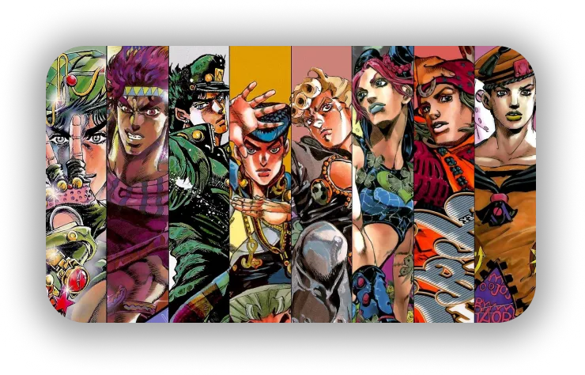
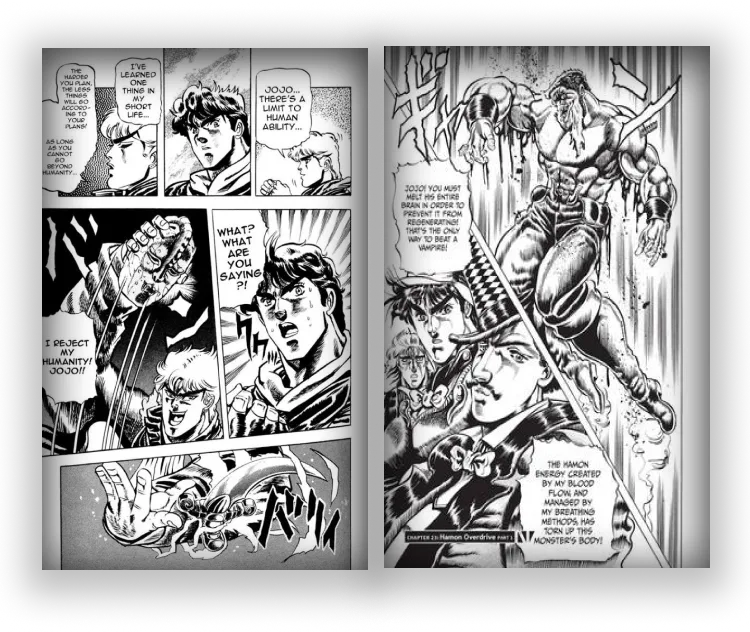
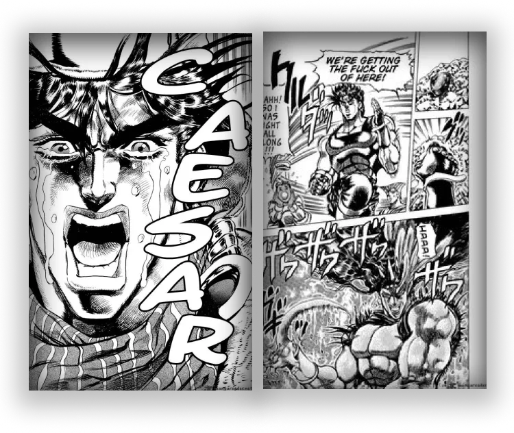
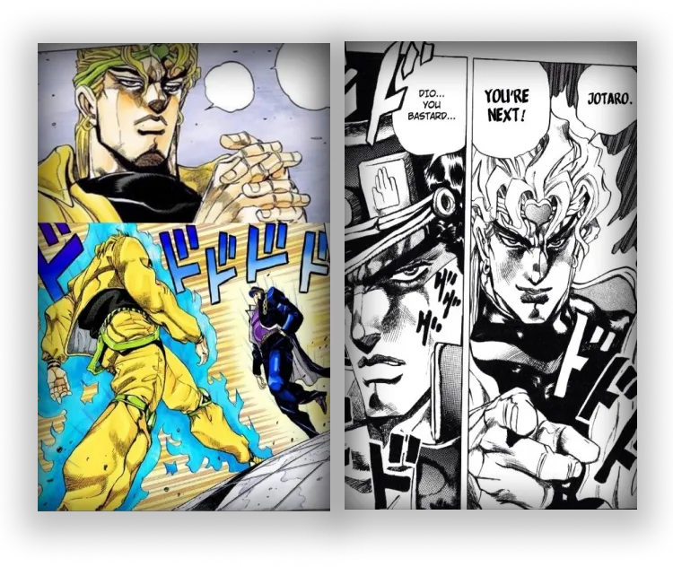
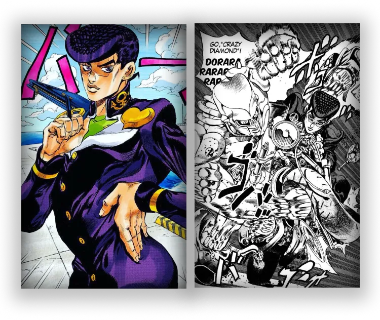
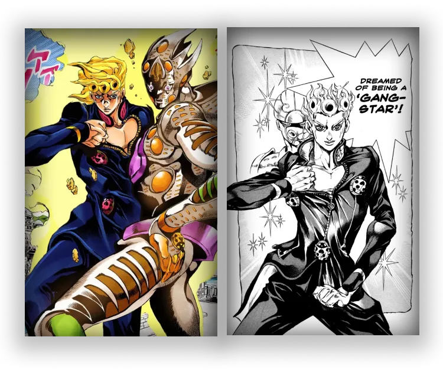
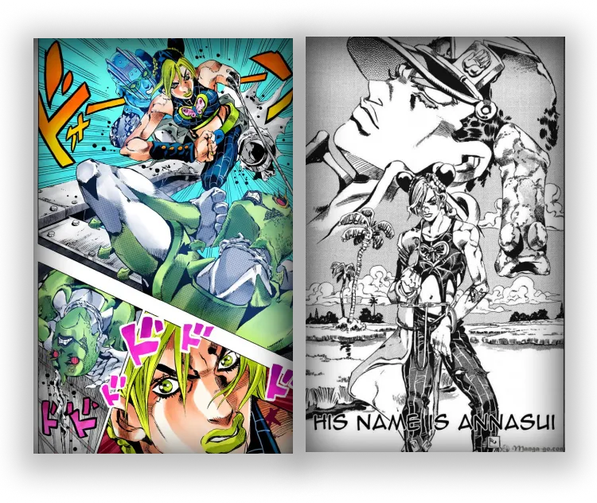

JOJO'S BIZARRE ADVENTURE
Un livre comparé à une oeuvre d’art
Hirohiko Araki is a very famous mangaka from Japan. It is him besides who has scripted Jojo's bizarre adventure. Jojo is a saga cut in 8 parts, always in progress, following the different generations of a family named "joestars". named "joestars". Each part puts in scene different characters, times and places, the particularity of each part, as said earlier, is that the is that the protagonists are all descendants of the same family and that the first name first name starts with "jo" referring to their ancestor "Jonathan Joestars", the first the first protagonist of the saga.
A manga also adapted into an anime that is very much in the news, whether it be by its music, its boards, its emblematic "memes" or even just its characters with rather special characters, but above all and without doubt by the style, the aesthetics of the work. Muscular characters that as the work progresses the work is refined and dressed in a more "original" way because during the writing Araki traveled a lot, which allowed him to discover other cultures and became a passionate cultures and became a passionate of "Fashion".
All the protagonists from part 1 to 8
Araki is passionate about art and fashion and makes us understand it among his many references in his work. numerous references in his work, the names of his characters, places, music places, music, everything makes us understand. The mangaka is a great fan of music, so he uses these names to baptize his characters and even takes even that of Polnareff!
Araki is passionate about cinema and therefore allows himself to create a great mix of genres between each part, it can be a story of serial killer in a city that has an adventure to travel half the planet.
Some plates of the work...
So we can see Araki's style evolving at the same time as the writing of his manga, whether the manga, whether the plates are colored or not.
PART 1
1987
PART 2
1988
PART 3
1989
PART 4
1992
PART 5
1995
PART 6
2000